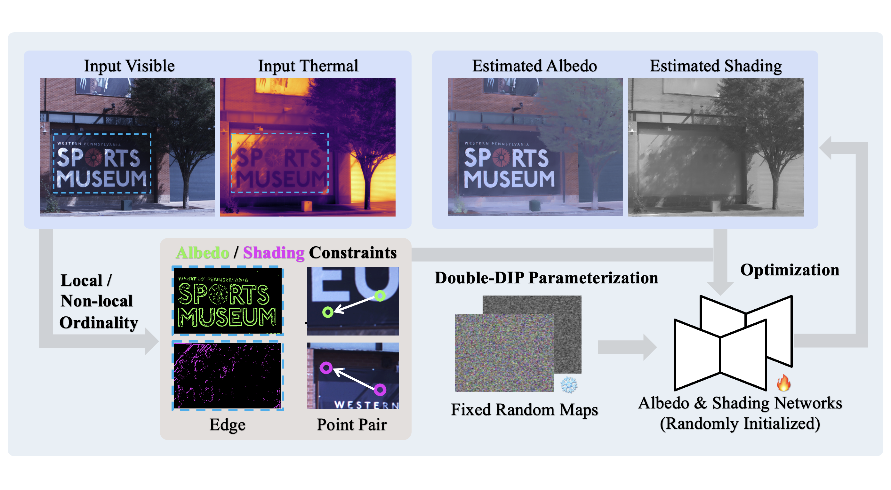
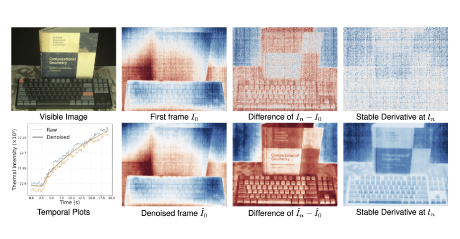
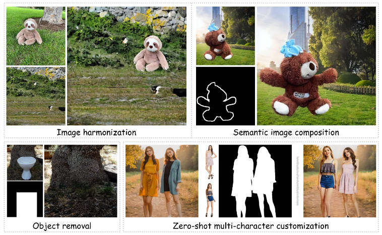
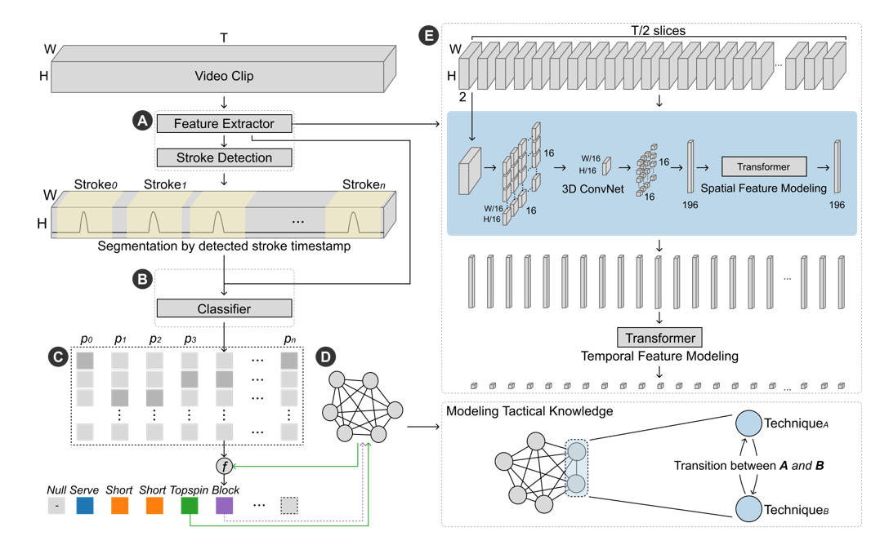
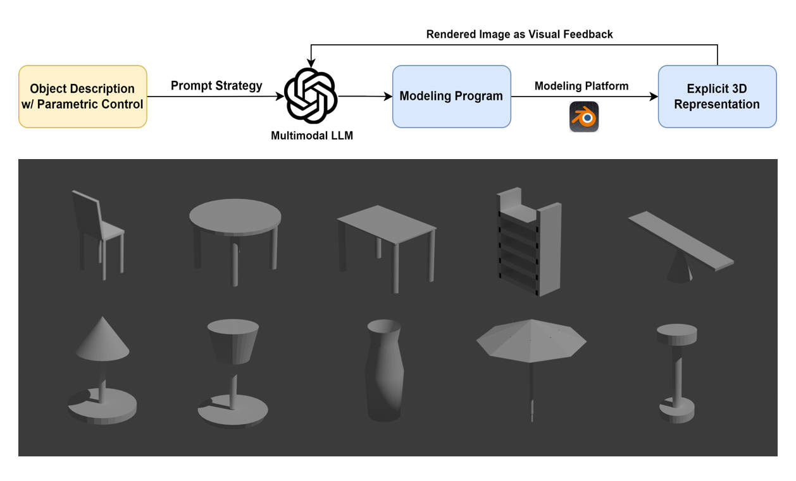
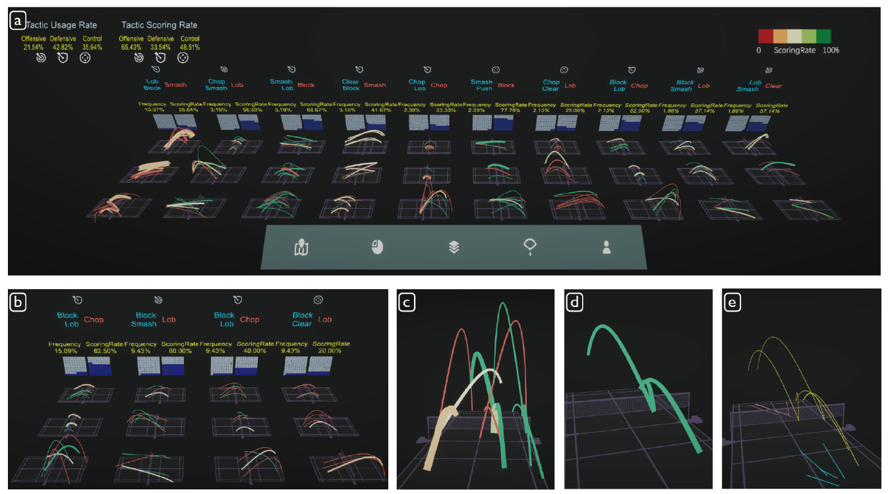
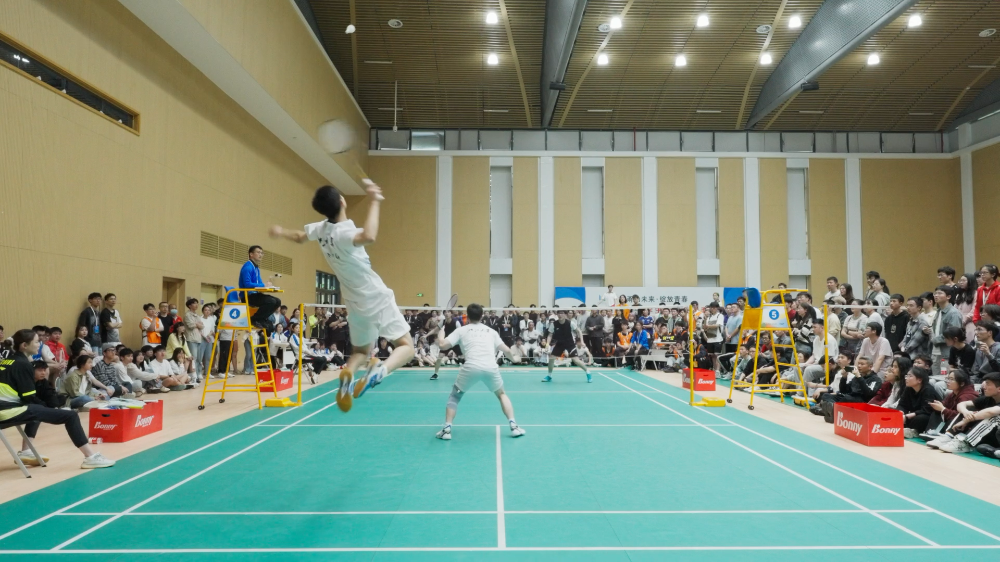

I am joining MIT to pursue my Ph.D. this fall.
Prior to that, I am completing my M.S. in Robotics at Carnegie Mellon University,
where I am fortunate to be advised by Prof. Srinivasa Narasimhan and Prof. Aswin Sankaranarayanan.
I am broadly interested in computer vision, embodied agents and generative AI.
My master's research focused on physics-based vision with light and heat, and my undergraduate work explored generative models and video understanding.
Previously, I received my bachelor's degree in Computer Science with
the highest honor
from Zhejiang University.
During my undergraduate years, I had the privilege to work with
Professors Yingcai Wu,
Jake Zhao,
Chunhua Shen
and Jiajun Wu.
Publications and Manuscripts

TLDR
Light absorbed rather than reflected leaves thermal traces that reveal lighting and material reflectance.
TLDR
Revealing subtle signals in thermal videos by modeling bolometric sensor physics.
TLDR
Learning spatial layout distribution from a single image using an adversarial generator.
TLDR
Exploiting pretrained diffusion priors for training-free image composition.
TLDR
Parsing broadcast racket-sport videos into stroke-level technique sequences.
TLDR
A framework and dataset for LLMs to generate code for parametric 3D modeling.
TLDR
Immersive VR visualization system for badminton tactical analysis.Talks
[2026/01] Invited talk @Columbia University: Physics-based Vision with Heat and LightSelected Honors
Best Poster Award, CVPR Workshop on Computational Cameras and Displays, 2025AAAI Student Scholarship, 2024
Chinese National Scholarship, Ministry of Education, 2021, 2022, 2023
Chu Kochen Presidential Scholarship, Zhejiang University, 2023
Top 10 Outstanding Students Award at Zhejiang University, 2023
SenseTime Scholarship, 2022
Academic Services
Program Committee / Reviewer for AAAI, CVPR, ECCV, NeurIPSTeaching Assistant for CS 21191070: Computer Vision, 2023
Mentor at CMU Paths to AI Research (PAIR) Program, 2025
Member of CMU School of Computer Science Dean's Advisory Committee, 2025
Conference Volunteer for AAAI, 2024
Miscellaneous

- U.S. National Collegiate Team Championships (D1-B) 🥇
- Chinese National First-Class Athlete
- Chinese National 8th Place in Men's Singles
- Zhejiang Provincial 🥇🥇🥈
- Fujian Provincial 🥈🥈🥉🥉